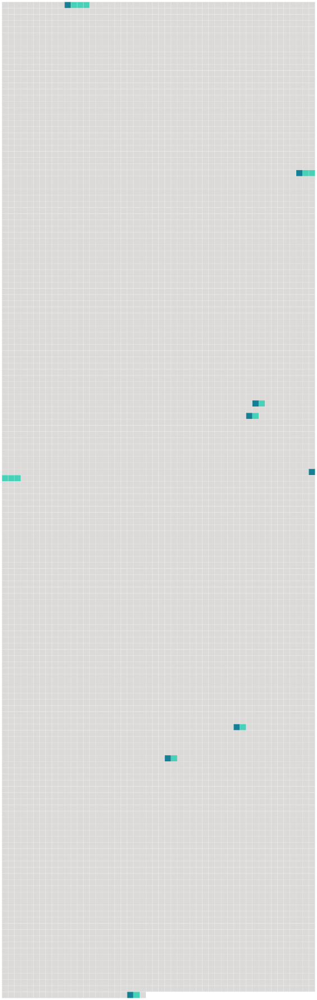

Longueur nb maillons : 8 mentions |
 |
Même à présent, je crois éprouver les impressions que [mon âme d'enfant] ressentit alors. [62 phrases] Devenue catholique, et voyant les réalités de la foi dans une lumière plus vive encore, elle écrivait : « Offerte de [toute mon âme] ma petite Kate ( sa seconde fille qui venait d'avoir sept ans ). [89 phrases] [Mon âme] est remplie de reconnaissance envers lui ; car assurément, avec tant de sujets que nous avons de renoncer toutes nos espérances ici-bas, nous irons chercher naturellement, sans le moindre effort, là-haut, notre repos. [2 phrases] Je m'appuie sur une foi ardente ; et alors je sens que tout est bien, que tout repose en la miséricorde de Dieu ; qu'il vous bénisse », chère Éliza, comme [mon âme] vous bénit. [18 phrases] « Il est un autre sentiment que vous partagerez avec moi, et qui absorbe [mon âme tout entière] : c'est le tendre, le paisible, le suave amour qui surnage sur chaque moment, sur chaque heure de ma lourde épreuve. [71 phrases] « Les cloches du matin ont éveillé [mon âme] aux regrets les plus douloureux, et l'ont plongée dans une telle agonie de tristesse, qu'au premier moment la prière elle -même a été impuissante à me soulager. [8 phrases] Une crise lui est, revenue, et avec elle toute l'agonie de [mon âme] [88 phrases] Que Notre-Seigneur est bon de donner un peu de force à [mon âme] !! |
 |
La ressource peut être téléchargée sur la page Ortolang
Si vous avez des questions ou vous voyez des erreurs, merci d'envoyer un mail à silvia.federzoni89@gmail.com
Site développé par S. Federzoni (contact)